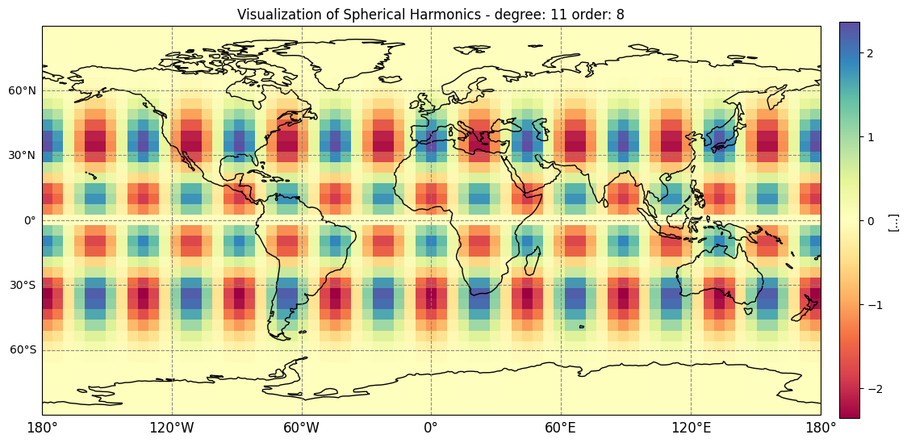
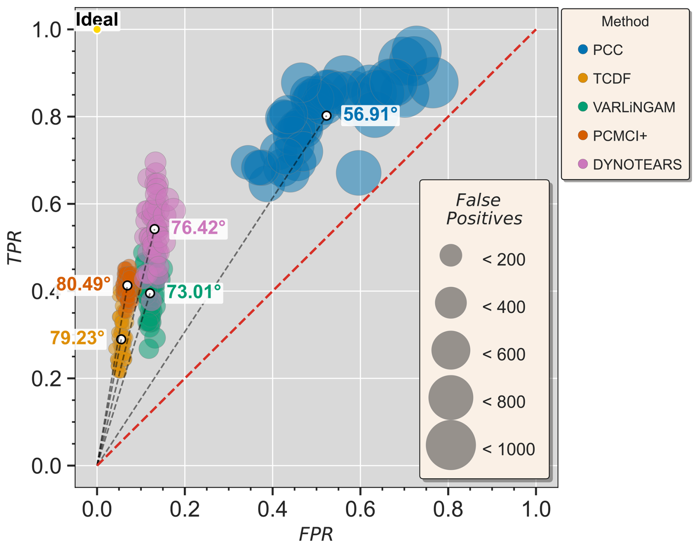

PySHbundle
A Python package for processing GRACE Level-2 gravimetry data into global surface-mass-change datasets.
Hydrology · Earth system science · Causality
Terrestrial water storage is a critical component of the global water cycle. I develop interpretable and physically based machine-learning models to understand changes in global water storage.
Test text

A Python package for processing GRACE Level-2 gravimetry data into global surface-mass-change datasets.

An evaluation of causal-discovery methods for identifying parsimonious drivers and supporting robust hydrometeorological prediction.
Conference abstracts, posters, presentations, and other public research materials.
Have a question? Send me an email :)
viveky [at] iisc.ac.in
vivekkumarya [at] student.unimelb.edu.au